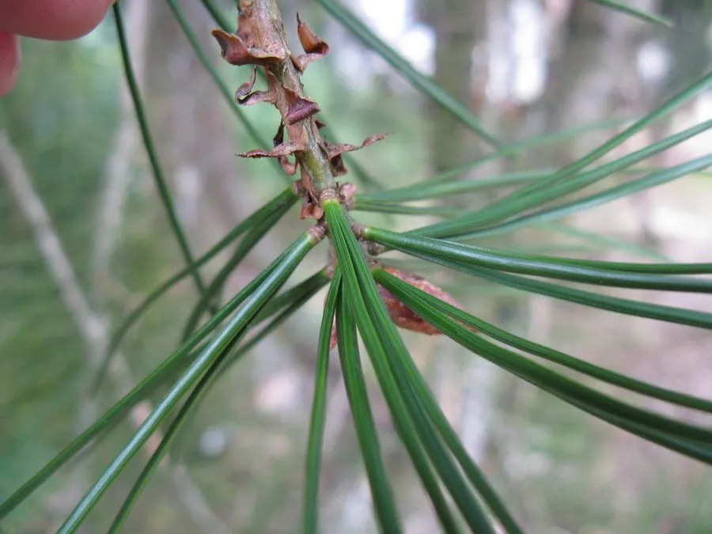

蕨类与裸子植物 · 植物界
白皮松 Pinus bungeana

白皮松是我国特有的松树，老树皮片状剥落，露出粉白色的内皮，斑驳如画，是著名的园林观赏树种。
- 分类
- 门裸子植物门纲松纲目松柏目科松科属松属
- 栖息环境
- 海拔 500–2000 m 的石灰岩山地与干燥山坡，耐旱耐瘠薄
- 地理分布
- 中国山西、陕西、河南、四川、湖北等地的山地，北方城市广泛栽培
- 保护级别
- IUCN 暂无评估；中国国家二级重点保护野生植物
物种志
白皮松是松科常绿乔木，高可达 30 m，胸径可达 1 m 以上。幼树树皮灰绿色，老树树皮呈不规则鳞片状剥落，露出粉白色或乳白色的内皮，形成斑驳的花纹，十分醒目。针叶 3 针一束，粗硬，长 5–10 cm，叶鞘早落。雌雄同株，球果卵形或圆锥状卵形，长 5–7 cm，成熟时淡黄褐色，鳞脐背生，有刺状突起。
白皮松是中国特有的树种，野生分布于山西、陕西、河南、四川、湖北等地的山地，多生于石灰岩山地与干燥山坡，耐旱、耐瘠薄、较耐寒。它生长缓慢，寿命长，树姿优美、树皮奇特，是北方著名的园林观赏树，故宫、颐和园等古建园林中多有栽培。种子可食，木材可供建筑。由于野生资源稀少、生境破碎，白皮松被列为中国国家二级重点保护野生植物，人工繁育与古树保护并重。
形态与习性
- 树高可达 30 m
- 树皮鳞片状剥落，露出粉白色内皮
- 针叶3 针一束，长 5–10 cm
- 球果卵形，长 5–7 cm
- 习性耐旱耐瘠薄，生长缓慢
- 保护国家二级重点保护野生植物
趣味知识
- 白皮松老树皮剥落后露出粉白色内皮，斑驳的花纹像一幅画。
- 它是中国特有的松树，故宫、颐和园等古园林中多有栽培。
- 白皮松生长缓慢、寿命很长，常被称作“白骨松”或“虎皮松”。